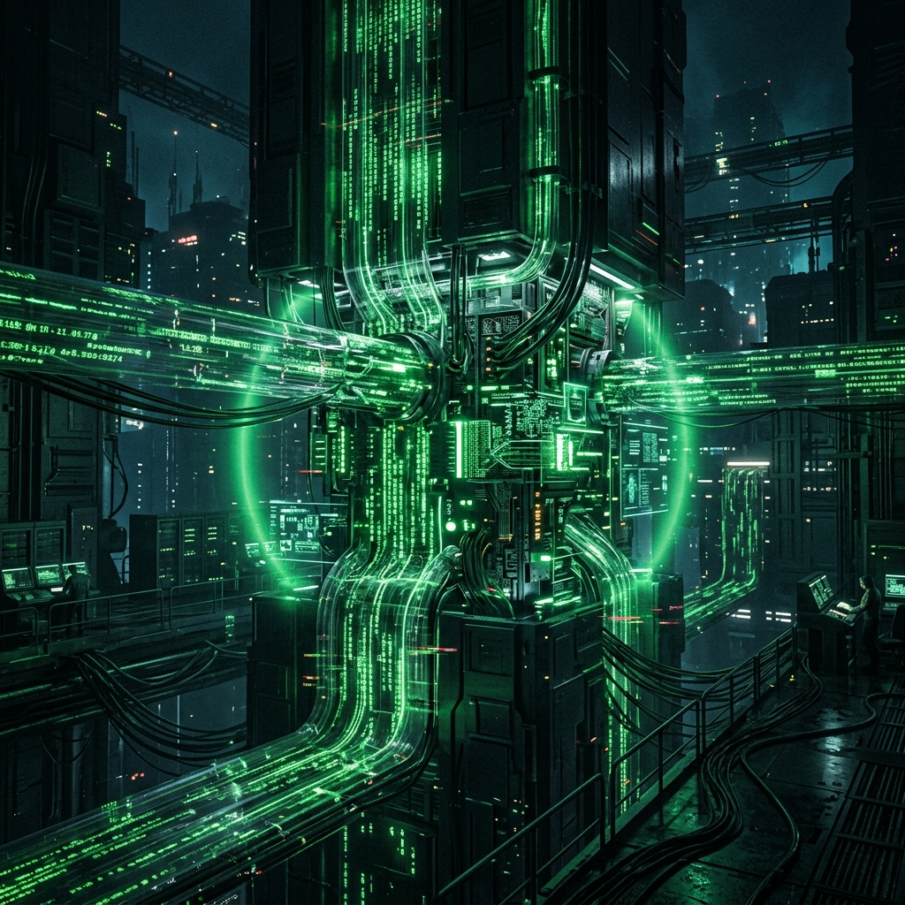

DashThis
Fathom
Automated Predictive Modeling Pipeline
No vectors identified
Broken Process
Audit all current Metacortex data silos and API access points for the Innovation Hub.
Configure DashThis connectors to automate real-time data aggregation for active research projects.
Deploy Fathom across the research team to automate meeting documentation and requirement gathering.
Initialize GoHighLevel to track project intake and automate stakeholder reporting on data readiness.
Team members are losing significant time gathering data from disparate sources before any actual research or analysis can begin.
The 'brutal' manual cleaning and preparation phase creates a massive bottleneck, delaying project kickoffs and reducing the team's ability to focus on generative AI trends.